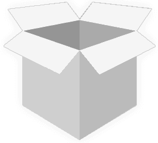

<ion-header [translucent]="true"> 
  <div class="statusBar">
    <div class="pageSdwStart"> </div>
    <div class="pageSdwStart_Bck"> </div>
  </div>  

  <div class="header-action-icon pb5"> 
    <div class="back_arrow text-left" (click)="goBack()">
      <svg xmlns="http://www.w3.org/2000/svg" width="82.394" height="62.785" viewBox="0 0 82.394 62.785">
        <path id="reply" d="M83.994,67.533S73.809,22.986,33.642,22.986V4.751L1.6,34.839,33.642,65.462V45.519c21.8-.006,38.982,1.928,50.352,22.017Z" transform="translate(-1.6 -4.751)" fill="#63c9ef"/>
        </svg> 
    </div> 

    <div class="ss_head text-center">
      <h3 class="main-heading">On Time Performance</h3> 
      <h5 class="title">Last 30 Days</h5>
    </div>
  </div>
  
  <div class="headerSelectFiled">
    <ion-row>
      <ion-col size="6">
        <ion-button class="form-control filterBtn mb0" (click)="openMenu('f')" >
        <ion-label color="light">Filter by</ion-label>
        </ion-button>
        <!-- <ion-select placeholder="Filter by"  [value]="filtBy"  [(ngModel)]="filtBy"  (ionChange)="filterBy()" class="form-control selectFiled mb0">
          <ion-select-option value="Retailer">Retailer</ion-select-option>
          <ion-select-option value="Status">Status</ion-select-option> 
          <ion-select-option value="Category">Category</ion-select-option> 
        </ion-select> -->
      </ion-col>
      <ion-col size="6">
        <ion-button class="form-control filterBtn mb0" (click)="openMenu('s')" >
        <ion-label color="light">Sort by</ion-label>
      </ion-button>
      </ion-col>
    </ion-row>
  </div>
</ion-header>


<ion-content id="main-menu" class="lightGray"> 

  <div class="main-container reportOtpPage"> 

      <div *ngIf="reportData.total > 0" class="Canvas_area text-center">
        <canvas #pieChart width="1000" height="1000"></canvas>
      </div> 

      <div class="shadowBox mt15 p15 pr10"> 
        <h3 class="main-heading text-center mt0">Refund Eligibility</h3> 
        <div class="reportInfoSSec mt10">
          
          <ng-container *ngIf="activeItems.length > 0">
          <div *ngFor="let item of activeItems" class="listingBlock mb15"> 
            <div class="lb_side">
            <ion-item class="shadowBox">
              <ion-avatar slot="start">
                
              </ion-avatar>
              <ion-label>
                <h2>{{item.ProductName}} </h2>
            <p class="status">Status: <span [ngClass]="{
              'delivered': item?.Status.toLowerCase().includes('deliver'),
              'exception': item?.Status.toLowerCase().includes('exception') ,
              'inTransit' : item?.Status.toLowerCase().includes('transit') 
          }" >{{item.Status}}</span></p>
            <br>
            <p class="Tracking">Tracking #: <span>{{item.TrackingNo}} </span></p>
            <p class="ExDate">Delivered: {{item.ExpectedDate}} </p> 
              </ion-label>
              <ion-checkbox></ion-checkbox>
            </ion-item>  
            <a href="javascript:void(0)" (click)="showDetail(item)" class="listAarrow">
              <svg xmlns="http://www.w3.org/2000/svg" xmlns:xlink="http://www.w3.org/1999/xlink" width="28.88" height="36.559" viewBox="0 0 28.88 36.559">
                <defs>
                  <filter id="chevron-down" x="0" y="0" width="28.88" height="36.559" filterUnits="userSpaceOnUse">
                    <feOffset dy="3" input="SourceAlpha"/>
                    <feGaussianBlur stdDeviation="3" result="blur"/>
                    <feFlood flood-opacity="0.161"/>
                    <feComposite operator="in" in2="blur"/>
                    <feComposite in="SourceGraphic"/>
                  </filter>
                </defs>
                <g transform="matrix(1, 0, 0, 1, 0, 0)" filter="url(#chevron-down)">
                  <path id="chevron-down-2" data-name="chevron-down" d="M7.226,12.077a1.7,1.7,0,0,1,2.522,0L16,18.072l6.253-5.995a1.7,1.7,0,0,1,2.518,0,1.9,1.9,0,0,1,0,2.584c-.65.669-7.512,7.2-7.512,7.2a1.75,1.75,0,0,1-2.521,0s-6.859-6.534-7.512-7.2a1.9,1.9,0,0,1,0-2.584Z" transform="translate(-2.52 31.28) rotate(-90)" fill="#dfdfdf"/>
                </g>
              </svg> 
            </a> 
           </div> 
          </div>
        </ng-container>
        </div>
      </div>


  </div>
  <button id="modelopen" data-toggle="modal"  data-target="#myModal"></button>
</ion-content>
<ion-menu class="sideMenu" side="end" contentId="main-menu" type="overlay" #side>
  <ion-header>
    <ion-toolbar>
      <ion-buttons slot="start">
        <ion-button color="dark" (click)="menuback()">
          <ion-icon name="arrow-back" *ngIf="!mainMenu"></ion-icon>
        </ion-button>
      </ion-buttons>
      <ion-title color="dark">{{Issidemenu}} by :</ion-title>
    </ion-toolbar>
  </ion-header>
  <ion-content>
    <ng-container *ngIf="Issidemenu === 'Filter'">
    <ion-list *ngIf="mainMenu">
      <ion-item detail="true" (click)="menu('c')">
        Carrier
      </ion-item>
      <ion-item detail="true" (click)="menu('s')">
        Status
      </ion-item>
      <ion-item detail="true" (click)="menu('d')">
        Date
      </ion-item>
    </ion-list>
    <ng-container>
    <ion-list *ngIf="carrierMenu">
      <ion-item detail="false">
        <ion-label>FedEx</ion-label>
        <ion-checkbox [(ngModel)]="Carrier.fedex" slot="end"></ion-checkbox>
      </ion-item>
      <ion-item detail="false">
        <ion-label>UPS</ion-label>
        <ion-checkbox [(ngModel)]="Carrier.ups" slot="end"></ion-checkbox>
      </ion-item>
      <ion-item detail="false">
        <ion-label>USPS</ion-label>
        <ion-checkbox [(ngModel)]="Carrier.usps" slot="end"></ion-checkbox>
      </ion-item>
      <ion-item detail="false">
        <ion-label>DHL</ion-label>
        <ion-checkbox [(ngModel)]="Carrier.dhl" slot="end"></ion-checkbox>
      </ion-item>
      <ion-item detail="false">
        <ion-label>OnTrack</ion-label>
        <ion-checkbox [(ngModel)]="Carrier.ontrack" slot="end"></ion-checkbox>
      </ion-item>
      <ion-item detail="false">
        <ion-label>Purolator</ion-label>
        <ion-checkbox [(ngModel)]="Carrier.purolator" slot="end"></ion-checkbox>
      </ion-item>
    </ion-list>
  </ng-container>
  <ng-container>
    <ion-list *ngIf="statusMenu">
        <ion-item detail="false">
            <ion-label>Delivered</ion-label>
            <ion-checkbox [(ngModel)]="Status.delivered" slot="end"></ion-checkbox>
          </ion-item>
          <ion-item detail="false">
            <ion-label>In Transit</ion-label>
            <ion-checkbox [(ngModel)]="Status.intransit" slot="end"></ion-checkbox>
          </ion-item>
          <ion-item detail="false">
            <ion-label>Exception</ion-label>
            <ion-checkbox [(ngModel)]="Status.exception" slot="end"></ion-checkbox>
          </ion-item>
    </ion-list>
  </ng-container>
  <ng-container>
    <ion-list *ngIf="dateMenu">
        <ion-item detail="false">
            <ion-label>Today</ion-label>
            <ion-checkbox [(ngModel)]="Date.today" slot="end"></ion-checkbox>
          </ion-item>
          <ion-item detail="false">
            <ion-label>Yesterday</ion-label>
            <ion-checkbox [(ngModel)]="Date.yesterday" slot="end"></ion-checkbox>
          </ion-item>
          <ion-item detail="false">
            <ion-label>This Week</ion-label>
            <ion-checkbox [(ngModel)]="Date.thisweek" slot="end"></ion-checkbox>
          </ion-item>
          <ion-item detail="false">
            <ion-label>Last Week</ion-label>
            <ion-checkbox [(ngModel)]="Date.lastweek" slot="end"></ion-checkbox>
          </ion-item>
          <ion-item detail="false">
            <ion-label>This Month</ion-label>
            <ion-checkbox [(ngModel)]="Date.thismonth" slot="end"></ion-checkbox>
          </ion-item>
          <ion-item detail="false">
            <ion-label>Last Month</ion-label>
            <ion-checkbox [(ngModel)]="Date.lastmonth" slot="end"></ion-checkbox>
          </ion-item>
    </ion-list>
  </ng-container>
</ng-container>
  <ng-container *ngIf="Issidemenu === 'Sort'">
    <ion-list>
      <ion-radio-group allow-empty-selection="true" [(ngModel)]="sortBy" name="radio-group" (ionChange)="radioGroupChange($event)" #radioGroup>
        <ion-item *ngFor="let item of radio_list"  (ionSelect)="radioSelect($event)">
          <ion-label>{{item.name}}</ion-label>
          <ion-radio slot="start" name="{{item.name}}" value="{{item.value}}"></ion-radio>
        </ion-item>
      </ion-radio-group>
    </ion-list>
  </ng-container>
  </ion-content>
  <ion-footer no-border> 
    <div class="filterAcBtn" *ngIf="Issidemenu === 'Filter'">
      <ion-row>
        <ion-col size="6">
          <ion-button (click)="clearall()" expand="block" fill="outline" class="cusBorderBtn">Clear all</ion-button>
        </ion-col>
        <ion-col size="6">
          <ion-button (click)="apply()" expand="block" fill="solid" class="submitBtn">Apply</ion-button>
        </ion-col> 
      </ion-row>
    </div>
  </ion-footer>
</ion-menu>
<div class="modal etreportModel" id="myModal">
  <div class="modal-dialog">
    <div class="modal-content">  
      <div class="modal-body text-center">
         
        <div class="text-center">
          <h3 class="main-heading">{{pop_status}}</h3>
          <h5 class="title">Last 30 Days</h5>
        </div>
        <div class="quantity">{{pop_value}}</div>
      </div>

    </div>
  </div>
</div>